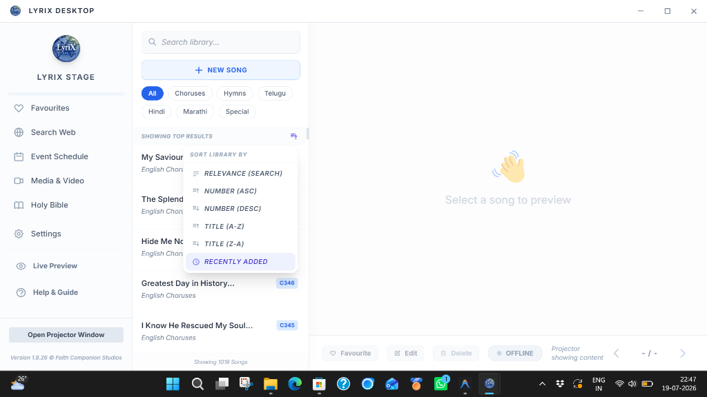
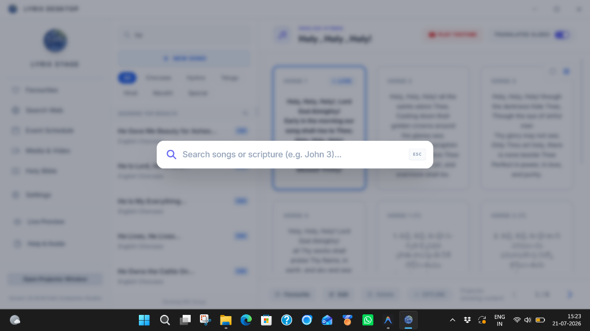

LyriX Stage Documentation
Welcome to the complete user manual for LyriX Stage. This guide is interactive—look for the blue callout boxes to find exactly where to click in the app to access each feature.
1. Library & Song Management
Build, organize, and format your church's song database.
Adding Songs Manually
How to find it:
Open the Song Library tab → Click the blue floating NEW SONG button at the bottom of the list.
You can type or paste lyrics directly into the editor. If you paste a block of text, ensure Auto-Format Lyrics is enabled in Settings to let LyriX intelligently break the text into properly formatted slides.
Sorting the Library
How to sort:
Look for the Sort icon on the far right of the SHOWING TOP RESULTS banner above the song list.
Click the sort icon to open a beautiful dropdown menu where you can choose between:
- Relevance (Search): The default behavior. Shows closest matches first.
- Number (Asc/Desc): Sorts your library by the unique song ID (e.g., C1, C2) with clear Up/Down arrows.
- Title (A-Z/Z-A): Standard alphabetical sorting with clear Up/Down arrows.
- Recently Added: Instantly bubbles up the newest additions to the top of your library.

Screenshot Placeholder: Please save your screenshot as assets/sort-menu-preview.pngCustomizing Slide Labels
LyriX automatically numbers your slides (e.g., Verse 1, Verse 2). To give a slide a custom name (like "Chorus", "Bridge", or "Vamp"), you have two easy options:
- Inline Editing (Fastest): On the main preview pane, simply click the text that says "VERSE 1" above a slide. Type your custom name (e.g., "Bridge") and press Enter. It automatically saves instantly!
- Editor Tags: When adding a song manually in the editor, simply type your custom name inside square brackets at the very beginning of a verse block (e.g.,
[Bridge]or[Pre-Chorus]). The system will automatically hide the brackets from the projector but update the sequence name!
Quick Edit Lyrics (On the Fly)
Need to fix a typo immediately during a live service? Instead of opening the full song editor:
- Hold Alt (or Option on Mac) and Click on the lyric text of any slide in the preview grid.
- The text will instantly become an editable textbox. Make your corrections directly on the slide.
- Press Escape or click anywhere else to save. Your changes will automatically update the master slide, fix any sequences, and update the live projector on the fly!
Favourites
Have songs you sing every single week? Click the Favourite button located beneath any song in the main preview pane. You can then quickly access all your favorite songs via the dedicated Favourites tab in the left sidebar.
PowerPoint & OpenLyrics XML Import (Drag & Drop)
How to use it:
Simply drag and drop a .pptx, .ppt, .ppsx, or .xml file from your computer directly into the LyriX window anywhere!
Have legacy presentations? LyriX will automatically extract the text from your presentation slides and generate a formatted song in your database.
Smart Chorus Tagging
To make choruses visually distinct (they will render in italics with a rounded background on the projector):
- Open any song for editing.
- Toggle the Tag Choruses switch on.
- Click on any stanza. It will highlight in blue, indicating it is now tagged as a chorus.
2. Command Center
Global Spotlight search for instant access to any song, scripture, or action.
The Command Center is the fastest way to control LyriX Stage during a live event. It is an intelligent floating search bar that can instantly locate any song in your database or directly query the Holy Bible without needing to navigate through different tabs.

Screenshot Placeholder: Please save your screenshot as assets/command-center-preview.pngHow to open it:
From anywhere in the application, press Ctrl + K (or Cmd+K on Mac).
Pure Keyboard Navigation
Once the Command Center is open, start typing a song name. Use the Up and Down Arrow keys to highlight a song, and press Enter to instantly select it and throw it to the preview panel without ever touching your mouse.
Smart Bible Search
The Command Center automatically recognizes scripture references! Type a book and chapter (e.g., John 3, Psalms 23, or 1 Peter 2:4) and an option to "Open Bible to..." will instantly appear. Press Enter, and LyriX will automatically switch to the Holy Bible tab and have the exact verse selected and ready for projection.
The "Blank" Action Keyword
Need to quickly blackout the projector screen? If you type the word blank into the Command Center and press Enter, it acts exactly like pressing the B shortcut—instantly blacking out the screen. Type it again to restore the projection.
3. Projector System & Aesthetics
Configure dual-displays and customize your presentation styling.
Setting Up External Displays
Where to find it:
Sidebar → ⚙️ Settings → Scroll to the Projector Display Setup card.
LyriX uses a frameless secondary window for projection. By default, it targets your "First External Display". If you have multiple screens, use the Target Display Monitor dropdown to explicitly select the target monitor.
Visual Themes: Media vs. Solid Modes
Where to find it:
Sidebar → ⚙️ Settings → Scroll to the Projector Styling card.
- Solid Colors Mode: The classic approach. Ideal for older, dimmer projectors. You have independent control over the background color and text color.
- Media Background Mode: Create highly immersive worship experiences. Click "Upload Media" to add looping video backgrounds (
.mp4,.webm) or high-resolution images. In Media Mode, LyriX automatically applies a drop-shadow to all text to ensure readability over complex backgrounds. Adjust the Background Blur slider to soften busy videos.
Live Projector Preview (Confidence Monitor)
Curious what is currently showing on the big screen without craning your neck? The Live Preview tab in the left sidebar creates an exact, miniaturized replica of the live projector output right on your desktop. It updates instantly in real-time, complete with backgrounds, fonts, and animations!
Watermarking (Church Logos)
In the Projector Display Setup card, look for "Projector Watermark". You can choose to display the LyriX logo, simple Church Name text, or upload a Custom Logo (a transparent PNG/SVG) that will sit unobtrusively in the corner of the screen.
4. Media & Presentations
Play YouTube URLs, local videos, and PowerPoint presentations directly.
How to find it:
Look at the left sidebar → Click 🎥 Media & Video.
Playing Videos
You can paste any YouTube URL (or YouTube Short URL) directly into the top bar to stream it live to the projector. Alternatively, drop local .mp4 videos into your Playlist Folder to have them appear natively in the sidebar for easy, offline playback with volume controls.
Launching PowerPoint (.pptx)
If you have Microsoft PowerPoint (or a compatible viewer like LibreOffice) installed on your computer, you can launch presentations seamlessly! Just select a .pptx file from your Media Folder or by clicking "Browse Media". LyriX will automatically launch the presentation in full-screen Slideshow mode over your projector screen.
Built-in Web Browser
The Search Web tab in the left sidebar provides a fully functional web browser natively inside LyriX. This is perfect for quickly looking up a last-minute song lyric, finding a specific YouTube video, or downloading media without ever needing to minimize the application and interrupt your workflow.
5. Sunday Service Schedule
Plan and execute your service seamlessly.
How to add items:
In the Library or Holy Bible tabs, hover over any song or verse. Click the icon that appears to instantly queue it into your Sunday Schedule.
The Sunday Service tab (accessible from the sidebar) acts as your live run-sheet for the event. Inside this tab, you can click and drag items to reorder them based on your service flow. Click an item to start presenting it!
Service Templates
You can save your current schedule as a template for future use. Click the Templates button at the top of the Event Schedule column. Even if your schedule is entirely empty, this top menu remains accessible so you can quickly load past templates!
6. Holy Bible Integration
Lightning-fast scripture lookup and dual-language projection.
LyriX comes pre-loaded with multiple Bible versions, currently supporting English (KJV), Hindi (BSI), and Telugu.
Dual-Language Projection
How to set it up:
Sidebar → ⚙️ Settings → Scroll to the Application Behavior card → Use the Primary / Secondary Bible Language dropdowns.
When you select a verse in the Bible tab, the projector will automatically split the screen, displaying the Primary language on the left and the Secondary language on the right. If you only need one language, set the Secondary language to "None".
Auto-Project Mode
How to find it:
Sidebar → 📖 Holy Bible → Look for the "Auto-Project Verses" toggle switch at the top.
If you need to rapidly follow a preaching pastor, toggle this switch ON. Once enabled, clicking any verse will instantly push it to the live projector screen, bypassing the preview step entirely.
Reporting Typos & Issues
If you spot a typo or a missing verse while using LyriX, you can easily report it directly to the developers for a future update:
- Report it in-app: Simply hover over any verse in the Bible tab preview area. A Report Issue button will appear on the right side. Clicking it will open a reporting window where you can submit the exact book, chapter, verse, and correction directly to our support team at faithcompanionstudios@gmail.com.
7. Multilingual & Custom Fonts
Built for global congregations and complex scripts.
Smart Indic Script Sizing
Because regional scripts (like Telugu, Hindi, Tamil) often appear smaller on screens than Latin characters, LyriX utilizes an intelligent script detection engine. When the projector detects Indic characters, it automatically boosts the font size by 50%, ensuring maximum readability without manual slider adjustments.
Uploading & Managing Custom Fonts
Where to manage fonts:
Sidebar → ⚙️ Settings → Click Advanced Settings (top right corner) → Go to the Language Fonts tab.
If your church uses specific fonts for regional languages, you can upload a .ttf file using the Upload Custom .ttf File button inside any language dropdown. Once uploaded, the font is permanently stored in your database and automatically assigned to that language.
- Live Native Previews: When selecting a font, LyriX automatically renders a live preview of the native script directly inside the dropdown menu, so you can see exactly what the font looks like before applying it.
- Seamless Projector Loading: Custom fonts and web fonts are fully integrated with the projector engine. The projector uses an advanced Hide-and-Fade technique: it keeps the text completely invisible while the font downloads in the background, only fading the lyrics in once the perfect layout and sizing have been calculated. This guarantees zero visual jumping or resizing.
- Deleting Fonts: To remove a custom font, open the language dropdown and click the small red trash can icon next to the font name. If the font was currently active, the system will gracefully reset your language to the System Default.
8. Intelligent Phonetic Typing
Type effortlessly in regional scripts without system keyboards.
LyriX features an incredibly powerful built-in phonetic typing engine for Indic languages. You do not need to install complex system keyboards or switch your computer's language settings.
How Phonetic Typing Works
When you edit or add a song, simply select a regional category (e.g., "Telugu Songs", "Hindi Songs"). The system will automatically detect the appropriate native script and enable phonetic typing.
Inside the Edit Modal:
Just type English phonetics (e.g., "stotram") and press the Spacebar. It will instantly convert into native script (e.g., స్తోత్రం) right before your eyes!
Toggling Phonetic Mode
Need to type an actual English word inside a regional song? You can temporarily pause the engine using the toggle inside the input field.
- Active: Converts English to Native script.
- Paused: Types standard English text.
9. Web Remote & Stage Viewer
Control the presentation from your phone or tablet.
LyriX Stage acts as a local server on your Wi-Fi network. This means any device connected to the same Wi-Fi router can interface with the software without needing internet access.
How to connect:
Sidebar → ⚙️ Settings → Look at the Mobile Remote Control card.
The Mobile Remote Control
You will see a large QR code and a Connection Address (e.g., http://192.168.1.5:3001). Scan the QR code with your smartphone camera, or type the address into your phone's browser. This opens the LyriX Web Remote, allowing you to cycle slides, trigger blackout, and navigate the Sunday schedule wirelessly.
The Stage Viewer & Anti-Sleep
In the same Settings card, click Show QR Code under the Stage Viewer section. Opening this link on an iPad or stage monitor displays a high-contrast live feed of the lyrics, keeping the worship team perfectly in sync.
- Anti-Sleep Mode: The Stage Viewer automatically engages your device's Wake Lock to prevent the screen from dimming or sleeping mid-service.
- Stage Messages: From the Desktop app, you can send custom "Stage Messages" (e.g., "Pastor is ready") that will elegantly animate down from the top of the Stage Viewer screen as a sleek popup notification without interrupting the lyrics.
10. Advanced Settings & Maintenance
Protect and manage your data.
How to access these tools:
Sidebar → ⚙️ Settings → Click the Advanced Settings button in the very top right corner. (Requires password authentication)
Database Backup & Bulk Import
- Export Database: Instantly download a complete JSON backup of every song in your library. Highly recommended before major software updates. Found in the Maintenance tab.
- Security (Password Protection): By default, Advanced Settings is protected by a password. In the Security tab, you can disable this requirement altogether by toggling off "Require Password". Once disabled, you can access Advanced Settings or execute critical actions instantly without entering a password.
- Bulk Import (XML, PPTX, JSON & More): Want to import multiple files at once? Use the Import Songs button in the Admin Maintenance tab (Advanced Settings → Maintenance → Import Songs). LyriX supports bulk importing from a massive variety of formats including OpenLyrics XML, OpenLP SQLite databases, CSV, and legacy LyriX JSON files. LyriX uses a sophisticated Preview Modal so you can review the songs, select specific items, and choose a target category before confirming. The system will automatically prevent duplicates!
The Recycle Bin
Deleted a song by mistake? LyriX moves deleted items to a recycle bin. Navigate to the Restore Songs tab in the Advanced Settings panel to view deleted songs and recover them instantly.
Factory Wipe (Danger Zone)
Located in the Danger Zone tab, the Factory Wipe option performs a complete system reset. It will delete all custom songs, custom fonts, media backgrounds, and return LyriX to its original installed state. This action cannot be undone.
11. Keyboard Shortcuts
Navigate LyriX like a pro.
| Action | Shortcut Key |
|---|---|
| Next Slide | Right Arrow or Down Arrow |
| Previous Slide | Left Arrow or Up Arrow |
| Toggle Blank Screen (Blackout) | B |
| Global Search | Ctrl + K |
| Delete Selected Song | Delete |
| Close Projector Window | ESC |
© LyriX Stage by Faith Companion Studios. All rights reserved.